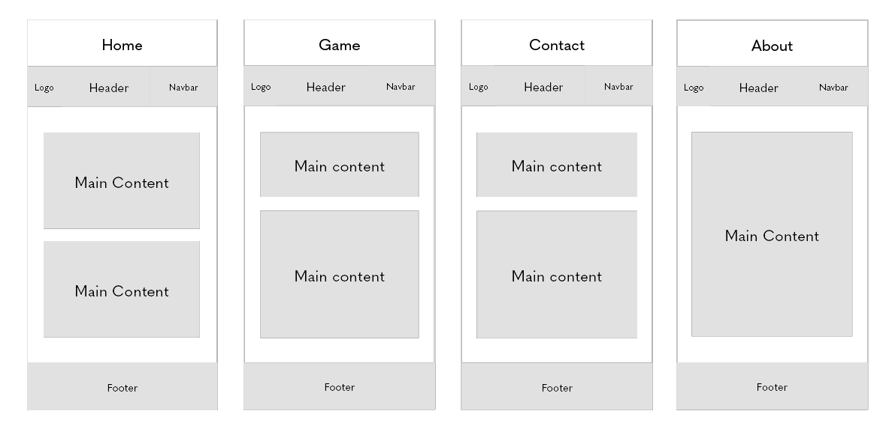

Reflection
I choose to create different folders for all the images and the CSS and keep all my pages inside the root folder. Because of the small size of the project, I found that it gave a better overview, but if the project was bigger I would consider doing it another way.
 When it comes to the visual hierarchy I tried to make it look clean and respective, but also child friendly. The concept is to give the impression that we are under the sea. That's why I also added animations of bubbles. Since the topic itself is very important, I added some facts from their page. Since the facts might be considered "boring" for kids, I tried to appeal to them by adding the turtle, so it looks like he is following us through the website and helping them on their journey.
For the game I chose Target group #1 – primary education: age 6 - 13 (years 1-7), because I feel like targeting the group that is just beginning school or is young, will make a more significant impact on how they perceive this topic in the future. And hopefully, inspire them to make a difference as early as possible.
For the game, I chose to make a picture domino, with an animal on one side and an ocean threat on the other. I decided to divide the game into two parts first to give some "facts" and pictures to create the right mindset. Then the kids are able to act and see the things they have learned.
Choices
For my typefaces, I chose a san serif font because it makes the website look clean and representable. The colors I chose were inspired by the blue from the page's logo, and the orangy color is inspired by the turtle to keep some contrast to the page. Even tho the blue use higher energy than some other colors, it was a suitable choice for the web design.
I chose to add a max-width at 1440px for the body, as it was the 2022 standard for regular desktops according to my search.
I used mostly grid throughout my page because I felt it gave more room when it comes to design and opportunities, compare to for example flex.
For the responsive web design, I have two media queries. One for iPad-sized devices and also for small screens. On the small screens, I changed the design of the header for it to look cleaner. I also felt like keeping it fixed, would take up too much space when scrolling, so it is static instead. But I have added an "up" button to easily access the top of the page.
For the form, if I was to choose a request method either POST or GET can be used in this case, since there is no direct sensitive data that is being inputed, but I chose GET.
Sustainability
When it comes to sustainability, I have tried to reduce the size of images and keep it to a minimum. I have compromised the file sizes and images to improve load speed and save energy. I have tried making reusable code through my page, but I see I could have planned it better for an even better outcome.
On my google maps I have intentionally chosen to keep the default lazy load, so it only loads if the user scrolls down to the footer.
When it comes to accessibility I have tried to use the alt attribute efficiently and added labels in the form. I tried to give the page an ok contrast when it comes to the colors. I used Web Accessibility Checker to check through my page. But these sites do not detect everything, so there is also necessary to manually look through as well.
Webpage size
| Transfer size-before | Transfer size-after |
|---|---|
| 7.8 kB | 6.1 kB |
| Size of the resources-before | Size of the resources-after |
|---|---|
| 5700 kB | 1500 kB |
Sources
- Information and icons
- Information and icons
- Information and icons
- Seahorse: Image by brgfx on Freepik
- Turtle: Image by brgfx on Freepik Image by brgfx on Freepik
- Seal: Image by brgfx on Freepik
- Dolphine: Image by brgfx on Freepik
- Penguin: Image by brgfx on Freepik
- Fish: Image by brgfx on Freepik
- Printer: Print icons created by itim2101 - Flaticon
- Scissors: Hairdress icons created by Freepik - Flaticon
- Trashbags: Shopping bag icons created by Freepik - Flaticon